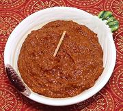

|
Recheio Masala, GoaIndia - Recheio Masala (Recheado) | ||||
| Makes: Effort: Sched: DoAhead: |
1 cup ** 1-1/2 hrs Yes |
A very important, and very tasty, Masala in the former Portuguese colony of Goa. It is used primarily with seafoods, but also with meats and some vegetables. It is mild enough I can eat it with a spoon. | |||
|
20 1/2 12 2 12 7 2 1/2 1 1/2 1/2 1 ----- 3 2 1/4 |
c cl in in t T t t t --- oz T t |
Byadagi Chilis (1) Vinegar (2) Garlic Ginger root Peppercorns blk Cloves Cinnamon Cumin seed Tamarind (3) Turmeric Sugar Salt -- Optional Onion Oil (4) Salt |
Do-Ahead - (1-1/2 hr - 45 min work)
|